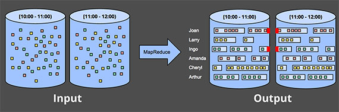
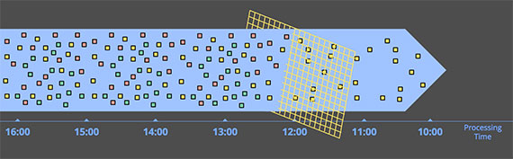

<!DOCTYPE html>
<html lang="zh">
<head>
<meta charset="UTF-8">
<!--[if IE]><meta http-equiv="X-UA-Compatible" content="IE=edge"><![endif]-->
<meta name="viewport" content="width=device-width, initial-scale=1.0">
<meta name="generator" content="Asciidoctor 1.5.5.dev">
<title>Streaming 101</title>
<link rel="stylesheet" href="https://fonts.googleapis.com/css?family=Open+Sans:300,300italic,400,400italic,600,600italic%7CNoto+Serif:400,400italic,700,700italic%7CDroid+Sans+Mono:400,700">
<style>
/* Asciidoctor default stylesheet | MIT License | http://asciidoctor.org */
/* Remove comment around @import statement below when using as a custom stylesheet */
/*@import "https://fonts.googleapis.com/css?family=Open+Sans:300,300italic,400,400italic,600,600italic%7CNoto+Serif:400,400italic,700,700italic%7CDroid+Sans+Mono:400,700";*/
article,aside,details,figcaption,figure,footer,header,hgroup,main,nav,section,summary{display:block}
audio,canvas,video{display:inline-block}
audio:not([controls]){display:none;height:0}
[hidden],template{display:none}
script{display:none!important}
html{font-family:sans-serif;-ms-text-size-adjust:100%;-webkit-text-size-adjust:100%}
body{margin:0}
a{background:transparent}
a:focus{outline:thin dotted}
a:active,a:hover{outline:0}
h1{font-size:2em;margin:.67em 0}
abbr[title]{border-bottom:1px dotted}
b,strong{font-weight:bold}
dfn{font-style:italic}
hr{-moz-box-sizing:content-box;box-sizing:content-box;height:0}
mark{background:#ff0;color:#000}
code,kbd,pre,samp{font-family:monospace;font-size:1em}
pre{white-space:pre-wrap}
q{quotes:"\201C" "\201D" "\2018" "\2019"}
small{font-size:80%}
sub,sup{font-size:75%;line-height:0;position:relative;vertical-align:baseline}
sup{top:-.5em}
sub{bottom:-.25em}
img{border:0}
svg:not(:root){overflow:hidden}
figure{margin:0}
fieldset{border:1px solid silver;margin:0 2px;padding:.35em .625em .75em}
legend{border:0;padding:0}
button,input,select,textarea{font-family:inherit;font-size:100%;margin:0}
button,input{line-height:normal}
button,select{text-transform:none}
button,html input[type="button"],input[type="reset"],input[type="submit"]{-webkit-appearance:button;cursor:pointer}
button[disabled],html input[disabled]{cursor:default}
input[type="checkbox"],input[type="radio"]{box-sizing:border-box;padding:0}
input[type="search"]{-webkit-appearance:textfield;-moz-box-sizing:content-box;-webkit-box-sizing:content-box;box-sizing:content-box}
input[type="search"]::-webkit-search-cancel-button,input[type="search"]::-webkit-search-decoration{-webkit-appearance:none}
button::-moz-focus-inner,input::-moz-focus-inner{border:0;padding:0}
textarea{overflow:auto;vertical-align:top}
table{border-collapse:collapse;border-spacing:0}
*,*:before,*:after{-moz-box-sizing:border-box;-webkit-box-sizing:border-box;box-sizing:border-box}
html,body{font-size:100%}
body{background:#fff;color:rgba(0,0,0,.8);padding:0;margin:0;font-family:"Noto Serif","DejaVu Serif",serif;font-weight:400;font-style:normal;line-height:1;position:relative;cursor:auto}
a:hover{cursor:pointer}
img,object,embed{max-width:100%;height:auto}
object,embed{height:100%}
img{-ms-interpolation-mode:bicubic}
.left{float:left!important}
.right{float:right!important}
.text-left{text-align:left!important}
.text-right{text-align:right!important}
.text-center{text-align:center!important}
.text-justify{text-align:justify!important}
.hide{display:none}
body{-webkit-font-smoothing:antialiased}
img,object,svg{display:inline-block;vertical-align:middle}
textarea{height:auto;min-height:50px}
select{width:100%}
.center{margin-left:auto;margin-right:auto}
.spread{width:100%}
p.lead,.paragraph.lead>p,#preamble>.sectionbody>.paragraph:first-of-type p{font-size:1.21875em;line-height:1.6}
.subheader,.admonitionblock td.content>.title,.audioblock>.title,.exampleblock>.title,.imageblock>.title,.listingblock>.title,.literalblock>.title,.stemblock>.title,.openblock>.title,.paragraph>.title,.quoteblock>.title,table.tableblock>.title,.verseblock>.title,.videoblock>.title,.dlist>.title,.olist>.title,.ulist>.title,.qlist>.title,.hdlist>.title{line-height:1.45;color:#7a2518;font-weight:400;margin-top:0;margin-bottom:.25em}
div,dl,dt,dd,ul,ol,li,h1,h2,h3,#toctitle,.sidebarblock>.content>.title,h4,h5,h6,pre,form,p,blockquote,th,td{margin:0;padding:0;direction:ltr}
a{color:#2156a5;text-decoration:underline;line-height:inherit}
a:hover,a:focus{color:#1d4b8f}
a img{border:none}
p{font-family:inherit;font-weight:400;font-size:1em;line-height:1.6;margin-bottom:1.25em;text-rendering:optimizeLegibility}
p aside{font-size:.875em;line-height:1.35;font-style:italic}
h1,h2,h3,#toctitle,.sidebarblock>.content>.title,h4,h5,h6{font-family:"Open Sans","DejaVu Sans",sans-serif;font-weight:300;font-style:normal;color:#ba3925;text-rendering:optimizeLegibility;margin-top:1em;margin-bottom:.5em;line-height:1.0125em}
h1 small,h2 small,h3 small,#toctitle small,.sidebarblock>.content>.title small,h4 small,h5 small,h6 small{font-size:60%;color:#e99b8f;line-height:0}
h1{font-size:2.125em}
h2{font-size:1.6875em}
h3,#toctitle,.sidebarblock>.content>.title{font-size:1.375em}
h4,h5{font-size:1.125em}
h6{font-size:1em}
hr{border:solid #ddddd8;border-width:1px 0 0;clear:both;margin:1.25em 0 1.1875em;height:0}
em,i{font-style:italic;line-height:inherit}
strong,b{font-weight:bold;line-height:inherit}
small{font-size:60%;line-height:inherit}
code{font-family:"Droid Sans Mono","DejaVu Sans Mono",monospace;font-weight:400;color:rgba(0,0,0,.9)}
ul,ol,dl{font-size:1em;line-height:1.6;margin-bottom:1.25em;list-style-position:outside;font-family:inherit}
ul,ol,ul.no-bullet,ol.no-bullet{margin-left:1.5em}
ul li ul,ul li ol{margin-left:1.25em;margin-bottom:0;font-size:1em}
ul.square li ul,ul.circle li ul,ul.disc li ul{list-style:inherit}
ul.square{list-style-type:square}
ul.circle{list-style-type:circle}
ul.disc{list-style-type:disc}
ul.no-bullet{list-style:none}
ol li ul,ol li ol{margin-left:1.25em;margin-bottom:0}
dl dt{margin-bottom:.3125em;font-weight:bold}
dl dd{margin-bottom:1.25em}
abbr,acronym{text-transform:uppercase;font-size:90%;color:rgba(0,0,0,.8);border-bottom:1px dotted #ddd;cursor:help}
abbr{text-transform:none}
blockquote{margin:0 0 1.25em;padding:.5625em 1.25em 0 1.1875em;border-left:1px solid #ddd}
blockquote cite{display:block;font-size:.9375em;color:rgba(0,0,0,.6)}
blockquote cite:before{content:"\2014 \0020"}
blockquote cite a,blockquote cite a:visited{color:rgba(0,0,0,.6)}
blockquote,blockquote p{line-height:1.6;color:rgba(0,0,0,.85)}
@media only screen and (min-width:768px){h1,h2,h3,#toctitle,.sidebarblock>.content>.title,h4,h5,h6{line-height:1.2}
h1{font-size:2.75em}
h2{font-size:2.3125em}
h3,#toctitle,.sidebarblock>.content>.title{font-size:1.6875em}
h4{font-size:1.4375em}}
table{background:#fff;margin-bottom:1.25em;border:solid 1px #dedede}
table thead,table tfoot{background:#f7f8f7;font-weight:bold}
table thead tr th,table thead tr td,table tfoot tr th,table tfoot tr td{padding:.5em .625em .625em;font-size:inherit;color:rgba(0,0,0,.8);text-align:left}
table tr th,table tr td{padding:.5625em .625em;font-size:inherit;color:rgba(0,0,0,.8)}
table tr.even,table tr.alt,table tr:nth-of-type(even){background:#f8f8f7}
table thead tr th,table tfoot tr th,table tbody tr td,table tr td,table tfoot tr td{display:table-cell;line-height:1.6}
body{tab-size:4}
h1,h2,h3,#toctitle,.sidebarblock>.content>.title,h4,h5,h6{line-height:1.2;word-spacing:-.05em}
h1 strong,h2 strong,h3 strong,#toctitle strong,.sidebarblock>.content>.title strong,h4 strong,h5 strong,h6 strong{font-weight:400}
.clearfix:before,.clearfix:after,.float-group:before,.float-group:after{content:" ";display:table}
.clearfix:after,.float-group:after{clear:both}
*:not(pre)>code{font-size:.9375em;font-style:normal!important;letter-spacing:0;padding:.1em .5ex;word-spacing:-.15em;background-color:#f7f7f8;-webkit-border-radius:4px;border-radius:4px;line-height:1.45;text-rendering:optimizeSpeed}
pre,pre>code{line-height:1.45;color:rgba(0,0,0,.9);font-family:"Droid Sans Mono","DejaVu Sans Mono",monospace;font-weight:400;text-rendering:optimizeSpeed}
.keyseq{color:rgba(51,51,51,.8)}
kbd{font-family:"Droid Sans Mono","DejaVu Sans Mono",monospace;display:inline-block;color:rgba(0,0,0,.8);font-size:.65em;line-height:1.45;background-color:#f7f7f7;border:1px solid #ccc;-webkit-border-radius:3px;border-radius:3px;-webkit-box-shadow:0 1px 0 rgba(0,0,0,.2),0 0 0 .1em white inset;box-shadow:0 1px 0 rgba(0,0,0,.2),0 0 0 .1em #fff inset;margin:0 .15em;padding:.2em .5em;vertical-align:middle;position:relative;top:-.1em;white-space:nowrap}
.keyseq kbd:first-child{margin-left:0}
.keyseq kbd:last-child{margin-right:0}
.menuseq,.menu{color:rgba(0,0,0,.8)}
b.button:before,b.button:after{position:relative;top:-1px;font-weight:400}
b.button:before{content:"[";padding:0 3px 0 2px}
b.button:after{content:"]";padding:0 2px 0 3px}
p a>code:hover{color:rgba(0,0,0,.9)}
#header,#content,#footnotes,#footer{width:100%;margin-left:auto;margin-right:auto;margin-top:0;margin-bottom:0;max-width:62.5em;*zoom:1;position:relative;padding-left:.9375em;padding-right:.9375em}
#header:before,#header:after,#content:before,#content:after,#footnotes:before,#footnotes:after,#footer:before,#footer:after{content:" ";display:table}
#header:after,#content:after,#footnotes:after,#footer:after{clear:both}
#content{margin-top:1.25em}
#content:before{content:none}
#header>h1:first-child{color:rgba(0,0,0,.85);margin-top:2.25rem;margin-bottom:0}
#header>h1:first-child+#toc{margin-top:8px;border-top:1px solid #ddddd8}
#header>h1:only-child,body.toc2 #header>h1:nth-last-child(2){border-bottom:1px solid #ddddd8;padding-bottom:8px}
#header .details{border-bottom:1px solid #ddddd8;line-height:1.45;padding-top:.25em;padding-bottom:.25em;padding-left:.25em;color:rgba(0,0,0,.6);display:-ms-flexbox;display:-webkit-flex;display:flex;-ms-flex-flow:row wrap;-webkit-flex-flow:row wrap;flex-flow:row wrap}
#header .details span:first-child{margin-left:-.125em}
#header .details span.email a{color:rgba(0,0,0,.85)}
#header .details br{display:none}
#header .details br+span:before{content:"\00a0\2013\00a0"}
#header .details br+span.author:before{content:"\00a0\22c5\00a0";color:rgba(0,0,0,.85)}
#header .details br+span#revremark:before{content:"\00a0|\00a0"}
#header #revnumber{text-transform:capitalize}
#header #revnumber:after{content:"\00a0"}
#content>h1:first-child:not([class]){color:rgba(0,0,0,.85);border-bottom:1px solid #ddddd8;padding-bottom:8px;margin-top:0;padding-top:1rem;margin-bottom:1.25rem}
#toc{border-bottom:1px solid #efefed;padding-bottom:.5em}
#toc>ul{margin-left:.125em}
#toc ul.sectlevel0>li>a{font-style:italic}
#toc ul.sectlevel0 ul.sectlevel1{margin:.5em 0}
#toc ul{font-family:"Open Sans","DejaVu Sans",sans-serif;list-style-type:none}
#toc li{line-height:1.3334;margin-top:.3334em}
#toc a{text-decoration:none}
#toc a:active{text-decoration:underline}
#toctitle{color:#7a2518;font-size:1.2em}
@media only screen and (min-width:768px){#toctitle{font-size:1.375em}
body.toc2{padding-left:15em;padding-right:0}
#toc.toc2{margin-top:0!important;background-color:#f8f8f7;position:fixed;width:15em;left:0;top:0;border-right:1px solid #efefed;border-top-width:0!important;border-bottom-width:0!important;z-index:1000;padding:1.25em 1em;height:100%;overflow:auto}
#toc.toc2 #toctitle{margin-top:0;margin-bottom:.8rem;font-size:1.2em}
#toc.toc2>ul{font-size:.9em;margin-bottom:0}
#toc.toc2 ul ul{margin-left:0;padding-left:1em}
#toc.toc2 ul.sectlevel0 ul.sectlevel1{padding-left:0;margin-top:.5em;margin-bottom:.5em}
body.toc2.toc-right{padding-left:0;padding-right:15em}
body.toc2.toc-right #toc.toc2{border-right-width:0;border-left:1px solid #efefed;left:auto;right:0}}
@media only screen and (min-width:1280px){body.toc2{padding-left:20em;padding-right:0}
#toc.toc2{width:20em}
#toc.toc2 #toctitle{font-size:1.375em}
#toc.toc2>ul{font-size:.95em}
#toc.toc2 ul ul{padding-left:1.25em}
body.toc2.toc-right{padding-left:0;padding-right:20em}}
#content #toc{border-style:solid;border-width:1px;border-color:#e0e0dc;margin-bottom:1.25em;padding:1.25em;background:#f8f8f7;-webkit-border-radius:4px;border-radius:4px}
#content #toc>:first-child{margin-top:0}
#content #toc>:last-child{margin-bottom:0}
#footer{max-width:100%;background-color:rgba(0,0,0,.8);padding:1.25em}
#footer-text{color:rgba(255,255,255,.8);line-height:1.44}
.sect1{padding-bottom:.625em}
@media only screen and (min-width:768px){.sect1{padding-bottom:1.25em}}
.sect1+.sect1{border-top:1px solid #efefed}
#content h1>a.anchor,h2>a.anchor,h3>a.anchor,#toctitle>a.anchor,.sidebarblock>.content>.title>a.anchor,h4>a.anchor,h5>a.anchor,h6>a.anchor{position:absolute;z-index:1001;width:1.5ex;margin-left:-1.5ex;display:block;text-decoration:none!important;visibility:hidden;text-align:center;font-weight:400}
#content h1>a.anchor:before,h2>a.anchor:before,h3>a.anchor:before,#toctitle>a.anchor:before,.sidebarblock>.content>.title>a.anchor:before,h4>a.anchor:before,h5>a.anchor:before,h6>a.anchor:before{content:"\00A7";font-size:.85em;display:block;padding-top:.1em}
#content h1:hover>a.anchor,#content h1>a.anchor:hover,h2:hover>a.anchor,h2>a.anchor:hover,h3:hover>a.anchor,#toctitle:hover>a.anchor,.sidebarblock>.content>.title:hover>a.anchor,h3>a.anchor:hover,#toctitle>a.anchor:hover,.sidebarblock>.content>.title>a.anchor:hover,h4:hover>a.anchor,h4>a.anchor:hover,h5:hover>a.anchor,h5>a.anchor:hover,h6:hover>a.anchor,h6>a.anchor:hover{visibility:visible}
#content h1>a.link,h2>a.link,h3>a.link,#toctitle>a.link,.sidebarblock>.content>.title>a.link,h4>a.link,h5>a.link,h6>a.link{color:#ba3925;text-decoration:none}
#content h1>a.link:hover,h2>a.link:hover,h3>a.link:hover,#toctitle>a.link:hover,.sidebarblock>.content>.title>a.link:hover,h4>a.link:hover,h5>a.link:hover,h6>a.link:hover{color:#a53221}
.audioblock,.imageblock,.literalblock,.listingblock,.stemblock,.videoblock{margin-bottom:1.25em}
.admonitionblock td.content>.title,.audioblock>.title,.exampleblock>.title,.imageblock>.title,.listingblock>.title,.literalblock>.title,.stemblock>.title,.openblock>.title,.paragraph>.title,.quoteblock>.title,table.tableblock>.title,.verseblock>.title,.videoblock>.title,.dlist>.title,.olist>.title,.ulist>.title,.qlist>.title,.hdlist>.title{text-rendering:optimizeLegibility;text-align:left;font-family:"Noto Serif","DejaVu Serif",serif;font-size:1rem;font-style:italic}
table.tableblock>caption.title{white-space:nowrap;overflow:visible;max-width:0}
.paragraph.lead>p,#preamble>.sectionbody>.paragraph:first-of-type p{color:rgba(0,0,0,.85)}
table.tableblock #preamble>.sectionbody>.paragraph:first-of-type p{font-size:inherit}
.admonitionblock>table{border-collapse:separate;border:0;background:none;width:100%}
.admonitionblock>table td.icon{text-align:center;width:80px}
.admonitionblock>table td.icon img{max-width:none}
.admonitionblock>table td.icon .title{font-weight:bold;font-family:"Open Sans","DejaVu Sans",sans-serif;text-transform:uppercase}
.admonitionblock>table td.content{padding-left:1.125em;padding-right:1.25em;border-left:1px solid #ddddd8;color:rgba(0,0,0,.6)}
.admonitionblock>table td.content>:last-child>:last-child{margin-bottom:0}
.exampleblock>.content{border-style:solid;border-width:1px;border-color:#e6e6e6;margin-bottom:1.25em;padding:1.25em;background:#fff;-webkit-border-radius:4px;border-radius:4px}
.exampleblock>.content>:first-child{margin-top:0}
.exampleblock>.content>:last-child{margin-bottom:0}
.sidebarblock{border-style:solid;border-width:1px;border-color:#e0e0dc;margin-bottom:1.25em;padding:1.25em;background:#f8f8f7;-webkit-border-radius:4px;border-radius:4px}
.sidebarblock>:first-child{margin-top:0}
.sidebarblock>:last-child{margin-bottom:0}
.sidebarblock>.content>.title{color:#7a2518;margin-top:0;text-align:center}
.exampleblock>.content>:last-child>:last-child,.exampleblock>.content .olist>ol>li:last-child>:last-child,.exampleblock>.content .ulist>ul>li:last-child>:last-child,.exampleblock>.content .qlist>ol>li:last-child>:last-child,.sidebarblock>.content>:last-child>:last-child,.sidebarblock>.content .olist>ol>li:last-child>:last-child,.sidebarblock>.content .ulist>ul>li:last-child>:last-child,.sidebarblock>.content .qlist>ol>li:last-child>:last-child{margin-bottom:0}
.literalblock pre,.listingblock pre:not(.highlight),.listingblock pre[class="highlight"],.listingblock pre[class^="highlight "],.listingblock pre.CodeRay,.listingblock pre.prettyprint{background:#f7f7f8}
.sidebarblock .literalblock pre,.sidebarblock .listingblock pre:not(.highlight),.sidebarblock .listingblock pre[class="highlight"],.sidebarblock .listingblock pre[class^="highlight "],.sidebarblock .listingblock pre.CodeRay,.sidebarblock .listingblock pre.prettyprint{background:#f2f1f1}
.literalblock pre,.literalblock pre[class],.listingblock pre,.listingblock pre[class]{-webkit-border-radius:4px;border-radius:4px;word-wrap:break-word;padding:1em;font-size:.8125em}
.literalblock pre.nowrap,.literalblock pre[class].nowrap,.listingblock pre.nowrap,.listingblock pre[class].nowrap{overflow-x:auto;white-space:pre;word-wrap:normal}
@media only screen and (min-width:768px){.literalblock pre,.literalblock pre[class],.listingblock pre,.listingblock pre[class]{font-size:.90625em}}
@media only screen and (min-width:1280px){.literalblock pre,.literalblock pre[class],.listingblock pre,.listingblock pre[class]{font-size:1em}}
.literalblock.output pre{color:#f7f7f8;background-color:rgba(0,0,0,.9)}
.listingblock pre.highlightjs{padding:0}
.listingblock pre.highlightjs>code{padding:1em;-webkit-border-radius:4px;border-radius:4px}
.listingblock pre.prettyprint{border-width:0}
.listingblock>.content{position:relative}
.listingblock code[data-lang]:before{display:none;content:attr(data-lang);position:absolute;font-size:.75em;top:.425rem;right:.5rem;line-height:1;text-transform:uppercase;color:#999}
.listingblock:hover code[data-lang]:before{display:block}
.listingblock.terminal pre .command:before{content:attr(data-prompt);padding-right:.5em;color:#999}
.listingblock.terminal pre .command:not([data-prompt]):before{content:"$"}
table.pyhltable{border-collapse:separate;border:0;margin-bottom:0;background:none}
table.pyhltable td{vertical-align:top;padding-top:0;padding-bottom:0;line-height:1.45}
table.pyhltable td.code{padding-left:.75em;padding-right:0}
pre.pygments .lineno,table.pyhltable td:not(.code){color:#999;padding-left:0;padding-right:.5em;border-right:1px solid #ddddd8}
pre.pygments .lineno{display:inline-block;margin-right:.25em}
table.pyhltable .linenodiv{background:none!important;padding-right:0!important}
.quoteblock{margin:0 1em 1.25em 1.5em;display:table}
.quoteblock>.title{margin-left:-1.5em;margin-bottom:.75em}
.quoteblock blockquote,.quoteblock blockquote p{color:rgba(0,0,0,.85);font-size:1.15rem;line-height:1.75;word-spacing:.1em;letter-spacing:0;font-style:italic;text-align:justify}
.quoteblock blockquote{margin:0;padding:0;border:0}
.quoteblock blockquote:before{content:"\201c";float:left;font-size:2.75em;font-weight:bold;line-height:.6em;margin-left:-.6em;color:#7a2518;text-shadow:0 1px 2px rgba(0,0,0,.1)}
.quoteblock blockquote>.paragraph:last-child p{margin-bottom:0}
.quoteblock .attribution{margin-top:.5em;margin-right:.5ex;text-align:right}
.quoteblock .quoteblock{margin-left:0;margin-right:0;padding:.5em 0;border-left:3px solid rgba(0,0,0,.6)}
.quoteblock .quoteblock blockquote{padding:0 0 0 .75em}
.quoteblock .quoteblock blockquote:before{display:none}
.verseblock{margin:0 1em 1.25em 1em}
.verseblock pre{font-family:"Open Sans","DejaVu Sans",sans;font-size:1.15rem;color:rgba(0,0,0,.85);font-weight:300;text-rendering:optimizeLegibility}
.verseblock pre strong{font-weight:400}
.verseblock .attribution{margin-top:1.25rem;margin-left:.5ex}
.quoteblock .attribution,.verseblock .attribution{font-size:.9375em;line-height:1.45;font-style:italic}
.quoteblock .attribution br,.verseblock .attribution br{display:none}
.quoteblock .attribution cite,.verseblock .attribution cite{display:block;letter-spacing:-.025em;color:rgba(0,0,0,.6)}
.quoteblock.abstract{margin:0 0 1.25em 0;display:block}
.quoteblock.abstract blockquote,.quoteblock.abstract blockquote p{text-align:left;word-spacing:0}
.quoteblock.abstract blockquote:before,.quoteblock.abstract blockquote p:first-of-type:before{display:none}
table.tableblock{max-width:100%;border-collapse:separate}
table.tableblock td>.paragraph:last-child p>p:last-child,table.tableblock th>p:last-child,table.tableblock td>p:last-child{margin-bottom:0}
table.tableblock,th.tableblock,td.tableblock{border:0 solid #dedede}
table.grid-all th.tableblock,table.grid-all td.tableblock{border-width:0 1px 1px 0}
table.grid-all tfoot>tr>th.tableblock,table.grid-all tfoot>tr>td.tableblock{border-width:1px 1px 0 0}
table.grid-cols th.tableblock,table.grid-cols td.tableblock{border-width:0 1px 0 0}
table.grid-all *>tr>.tableblock:last-child,table.grid-cols *>tr>.tableblock:last-child{border-right-width:0}
table.grid-rows th.tableblock,table.grid-rows td.tableblock{border-width:0 0 1px 0}
table.grid-all tbody>tr:last-child>th.tableblock,table.grid-all tbody>tr:last-child>td.tableblock,table.grid-all thead:last-child>tr>th.tableblock,table.grid-rows tbody>tr:last-child>th.tableblock,table.grid-rows tbody>tr:last-child>td.tableblock,table.grid-rows thead:last-child>tr>th.tableblock{border-bottom-width:0}
table.grid-rows tfoot>tr>th.tableblock,table.grid-rows tfoot>tr>td.tableblock{border-width:1px 0 0 0}
table.frame-all{border-width:1px}
table.frame-sides{border-width:0 1px}
table.frame-topbot{border-width:1px 0}
th.halign-left,td.halign-left{text-align:left}
th.halign-right,td.halign-right{text-align:right}
th.halign-center,td.halign-center{text-align:center}
th.valign-top,td.valign-top{vertical-align:top}
th.valign-bottom,td.valign-bottom{vertical-align:bottom}
th.valign-middle,td.valign-middle{vertical-align:middle}
table thead th,table tfoot th{font-weight:bold}
tbody tr th{display:table-cell;line-height:1.6;background:#f7f8f7}
tbody tr th,tbody tr th p,tfoot tr th,tfoot tr th p{color:rgba(0,0,0,.8);font-weight:bold}
p.tableblock>code:only-child{background:none;padding:0}
p.tableblock{font-size:1em}
td>div.verse{white-space:pre}
ol{margin-left:1.75em}
ul li ol{margin-left:1.5em}
dl dd{margin-left:1.125em}
dl dd:last-child,dl dd:last-child>:last-child{margin-bottom:0}
ol>li p,ul>li p,ul dd,ol dd,.olist .olist,.ulist .ulist,.ulist .olist,.olist .ulist{margin-bottom:.625em}
ul.unstyled,ol.unnumbered,ul.checklist,ul.none{list-style-type:none}
ul.unstyled,ol.unnumbered,ul.checklist{margin-left:.625em}
ul.checklist li>p:first-child>.fa-square-o:first-child,ul.checklist li>p:first-child>.fa-check-square-o:first-child{width:1em;font-size:.85em}
ul.checklist li>p:first-child>input[type="checkbox"]:first-child{width:1em;position:relative;top:1px}
ul.inline{margin:0 auto .625em auto;margin-left:-1.375em;margin-right:0;padding:0;list-style:none;overflow:hidden}
ul.inline>li{list-style:none;float:left;margin-left:1.375em;display:block}
ul.inline>li>*{display:block}
.unstyled dl dt{font-weight:400;font-style:normal}
ol.arabic{list-style-type:decimal}
ol.decimal{list-style-type:decimal-leading-zero}
ol.loweralpha{list-style-type:lower-alpha}
ol.upperalpha{list-style-type:upper-alpha}
ol.lowerroman{list-style-type:lower-roman}
ol.upperroman{list-style-type:upper-roman}
ol.lowergreek{list-style-type:lower-greek}
.hdlist>table,.colist>table{border:0;background:none}
.hdlist>table>tbody>tr,.colist>table>tbody>tr{background:none}
td.hdlist1,td.hdlist2{vertical-align:top;padding:0 .625em}
td.hdlist1{font-weight:bold;padding-bottom:1.25em}
.literalblock+.colist,.listingblock+.colist{margin-top:-.5em}
.colist>table tr>td:first-of-type{padding:0 .75em;line-height:1}
.colist>table tr>td:last-of-type{padding:.25em 0}
.thumb,.th{line-height:0;display:inline-block;border:solid 4px #fff;-webkit-box-shadow:0 0 0 1px #ddd;box-shadow:0 0 0 1px #ddd}
.imageblock.left,.imageblock[style*="float: left"]{margin:.25em .625em 1.25em 0}
.imageblock.right,.imageblock[style*="float: right"]{margin:.25em 0 1.25em .625em}
.imageblock>.title{margin-bottom:0}
.imageblock.thumb,.imageblock.th{border-width:6px}
.imageblock.thumb>.title,.imageblock.th>.title{padding:0 .125em}
.image.left,.image.right{margin-top:.25em;margin-bottom:.25em;display:inline-block;line-height:0}
.image.left{margin-right:.625em}
.image.right{margin-left:.625em}
a.image{text-decoration:none;display:inline-block}
a.image object{pointer-events:none}
sup.footnote,sup.footnoteref{font-size:.875em;position:static;vertical-align:super}
sup.footnote a,sup.footnoteref a{text-decoration:none}
sup.footnote a:active,sup.footnoteref a:active{text-decoration:underline}
#footnotes{padding-top:.75em;padding-bottom:.75em;margin-bottom:.625em}
#footnotes hr{width:20%;min-width:6.25em;margin:-.25em 0 .75em 0;border-width:1px 0 0 0}
#footnotes .footnote{padding:0 .375em 0 .225em;line-height:1.3334;font-size:.875em;margin-left:1.2em;text-indent:-1.05em;margin-bottom:.2em}
#footnotes .footnote a:first-of-type{font-weight:bold;text-decoration:none}
#footnotes .footnote:last-of-type{margin-bottom:0}
#content #footnotes{margin-top:-.625em;margin-bottom:0;padding:.75em 0}
.gist .file-data>table{border:0;background:#fff;width:100%;margin-bottom:0}
.gist .file-data>table td.line-data{width:99%}
div.unbreakable{page-break-inside:avoid}
.big{font-size:larger}
.small{font-size:smaller}
.underline{text-decoration:underline}
.overline{text-decoration:overline}
.line-through{text-decoration:line-through}
.aqua{color:#00bfbf}
.aqua-background{background-color:#00fafa}
.black{color:#000}
.black-background{background-color:#000}
.blue{color:#0000bf}
.blue-background{background-color:#0000fa}
.fuchsia{color:#bf00bf}
.fuchsia-background{background-color:#fa00fa}
.gray{color:#606060}
.gray-background{background-color:#7d7d7d}
.green{color:#006000}
.green-background{background-color:#007d00}
.lime{color:#00bf00}
.lime-background{background-color:#00fa00}
.maroon{color:#600000}
.maroon-background{background-color:#7d0000}
.navy{color:#000060}
.navy-background{background-color:#00007d}
.olive{color:#606000}
.olive-background{background-color:#7d7d00}
.purple{color:#600060}
.purple-background{background-color:#7d007d}
.red{color:#bf0000}
.red-background{background-color:#fa0000}
.silver{color:#909090}
.silver-background{background-color:#bcbcbc}
.teal{color:#006060}
.teal-background{background-color:#007d7d}
.white{color:#bfbfbf}
.white-background{background-color:#fafafa}
.yellow{color:#bfbf00}
.yellow-background{background-color:#fafa00}
span.icon>.fa{cursor:default}
.admonitionblock td.icon [class^="fa icon-"]{font-size:2.5em;text-shadow:1px 1px 2px rgba(0,0,0,.5);cursor:default}
.admonitionblock td.icon .icon-note:before{content:"\f05a";color:#19407c}
.admonitionblock td.icon .icon-tip:before{content:"\f0eb";text-shadow:1px 1px 2px rgba(155,155,0,.8);color:#111}
.admonitionblock td.icon .icon-warning:before{content:"\f071";color:#bf6900}
.admonitionblock td.icon .icon-caution:before{content:"\f06d";color:#bf3400}
.admonitionblock td.icon .icon-important:before{content:"\f06a";color:#bf0000}
.conum[data-value]{display:inline-block;color:#fff!important;background-color:rgba(0,0,0,.8);-webkit-border-radius:100px;border-radius:100px;text-align:center;font-size:.75em;width:1.67em;height:1.67em;line-height:1.67em;font-family:"Open Sans","DejaVu Sans",sans-serif;font-style:normal;font-weight:bold}
.conum[data-value] *{color:#fff!important}
.conum[data-value]+b{display:none}
.conum[data-value]:after{content:attr(data-value)}
pre .conum[data-value]{position:relative;top:-.125em}
b.conum *{color:inherit!important}
.conum:not([data-value]):empty{display:none}
dt,th.tableblock,td.content,div.footnote{text-rendering:optimizeLegibility}
h1,h2,p,td.content,span.alt{letter-spacing:-.01em}
p strong,td.content strong,div.footnote strong{letter-spacing:-.005em}
p,blockquote,dt,td.content,span.alt{font-size:1.0625rem}
p{margin-bottom:1.25rem}
.sidebarblock p,.sidebarblock dt,.sidebarblock td.content,p.tableblock{font-size:1em}
.exampleblock>.content{background-color:#fffef7;border-color:#e0e0dc;-webkit-box-shadow:0 1px 4px #e0e0dc;box-shadow:0 1px 4px #e0e0dc}
.print-only{display:none!important}
@media print{@page{margin:1.25cm .75cm}
*{-webkit-box-shadow:none!important;box-shadow:none!important;text-shadow:none!important}
a{color:inherit!important;text-decoration:underline!important}
a.bare,a[href^="#"],a[href^="mailto:"]{text-decoration:none!important}
a[href^="http:"]:not(.bare):after,a[href^="https:"]:not(.bare):after{content:"(" attr(href) ")";display:inline-block;font-size:.875em;padding-left:.25em}
abbr[title]:after{content:" (" attr(title) ")"}
pre,blockquote,tr,img,object,svg{page-break-inside:avoid}
thead{display:table-header-group}
svg{max-width:100%}
p,blockquote,dt,td.content{font-size:1em;orphans:3;widows:3}
h2,h3,#toctitle,.sidebarblock>.content>.title{page-break-after:avoid}
#toc,.sidebarblock,.exampleblock>.content{background:none!important}
#toc{border-bottom:1px solid #ddddd8!important;padding-bottom:0!important}
.sect1{padding-bottom:0!important}
.sect1+.sect1{border:0!important}
#header>h1:first-child{margin-top:1.25rem}
body.book #header{text-align:center}
body.book #header>h1:first-child{border:0!important;margin:2.5em 0 1em 0}
body.book #header .details{border:0!important;display:block;padding:0!important}
body.book #header .details span:first-child{margin-left:0!important}
body.book #header .details br{display:block}
body.book #header .details br+span:before{content:none!important}
body.book #toc{border:0!important;text-align:left!important;padding:0!important;margin:0!important}
body.book #toc,body.book #preamble,body.book h1.sect0,body.book .sect1>h2{page-break-before:always}
.listingblock code[data-lang]:before{display:block}
#footer{background:none!important;padding:0 .9375em}
#footer-text{color:rgba(0,0,0,.6)!important;font-size:.9em}
.hide-on-print{display:none!important}
.print-only{display:block!important}
.hide-for-print{display:none!important}
.show-for-print{display:inherit!important}}
</style>
<link rel="stylesheet" href="https://cdnjs.cloudflare.com/ajax/libs/font-awesome/4.6.3/css/font-awesome.min.css">
</head>
<body class="article toc2 toc-left">
<div id="header">
<h1>Streaming 101</h1>
<div id="toc" class="toc2">
<div id="toctitle">Table of Contents</div>
<ul class="sectlevel1">
<li><a href="#true-">背景</a></li>
<li><a href="#true-business-requirements">商业/业务需求(Business Requirements)</a></li>
<li><a href="#true-terminology">名词(terminology)</a>
<ul class="sectlevel2">
<li><a href="#true-streaming">什么是 Streaming</a></li>
<li><a href="#trueunbounded-data">Unbounded data</a></li>
<li><a href="#trueunbounded-data-processing">Unbounded data processing</a></li>
<li><a href="#truelow-latency-approximate-and-or-speculative-results">Low-latency, approximate, and/or speculative results:</a></li>
</ul>
</li>
<li><a href="#true-capabilities">能力(capabilities)</a>
<ul class="sectlevel2">
<li><a href="#true-correctness">正确性(Correctness)</a></li>
<li><a href="#true-tools-for-reasoning-about-time">时间诊断工具(Tools for reasoning about time)</a></li>
</ul>
</li>
<li><a href="#true-time-domain">时间定义域(time domain)</a>
<ul class="sectlevel2">
<li><a href="#trueevent-time">Event Time</a></li>
<li><a href="#trueprocessing-time">Processing Time</a></li>
<li><a href="#true--2">两种时间不一致的原因</a></li>
</ul>
</li>
<li><a href="#true--3">常见数据处理模式</a>
<ul class="sectlevel2">
<li><a href="#true--4">有界数据处理</a></li>
<li><a href="#true--5">无界数据处理</a>
<ul class="sectlevel3">
<li><a href="#true--6">无界数据处理-批式</a>
<ul class="sectlevel4">
<li><a href="#truefixed-windows">Fixed windows</a></li>
<li><a href="#truesessions">Sessions</a></li>
</ul>
</li>
<li><a href="#true--7">无界数据处理-流式</a>
<ul class="sectlevel4">
<li><a href="#truetime-agnostic">Time-agnostic</a></li>
<li><a href="#trueapproximation-algorithms">Approximation algorithms</a></li>
<li><a href="#truewindowing-by-processing-time">Windowing by Processing Time</a></li>
<li><a href="#truewindowing-by-event-time">Windowing by Event Time</a></li>
</ul>
</li>
</ul>
</li>
</ul>
</li>
<li><a href="#trueconclusion">Conclusion</a></li>
</ul>
</div>
</div>
<div id="content">
<div class="sect1">
<h2 id="true-"><a class="anchor" href="#true-"></a>背景</h2>
<div class="sectionbody">
<div class="paragraph">
<p><a href="https://www.oreilly.com/ideas/the-world-beyond-batch-streaming-101">Streaming 101</a> 和 <a href="https://www.oreilly.com/ideas/the-world-beyond-batch-streaming-102">Streaming 102</a> 是作者原先发表在出版社 oreily 网站上的两篇文章。</p>
</div>
<div class="paragraph">
<p>Streaming 101 部分覆盖了一些基本的背景信息，在深入流式计算细节之前，澄清了一些名词概念，这些是大家经常谈论的批处理和流处理中可能经常遇到的概念。</p>
</div>
<div class="paragraph">
<p>Streaming 102 部分主要讲 Dataflow Model，这部分主要讲的是统一的批+流处理模型，这套模型也是 Google Cloud Dataflow 中使用的模型。并辅以实例进行说明。在这之后会对世面上的批处理和流式系统进行简单的语义上的比较。</p>
</div>
</div>
</div>
<div class="sect1">
<h2 id="true-business-requirements"><a class="anchor" href="#true-business-requirements"></a>商业/业务需求(Business Requirements)</h2>
<div class="sectionbody">
<div class="olist arabic">
<ol class="arabic">
<li>
<p>低延迟(low latency)</p>
</li>
<li>
<p>大规模、无界处理(massive, unbounded processing)</p>
</li>
<li>
<p>方便对资源使用量进行评估(easily predication of resouce consumption)</p>
</li>
</ol>
</div>
<div class="paragraph">
<p>Streaming 101 讨论的话题聚焦在: 名词(terminology)，能力(capabilities)，时间定义域(time domain)</p>
</div>
<div class="paragraph">
<p>为什么聚焦在这三个方面呢？</p>
</div>
<div class="paragraph">
<p>名词 : 在数据处理领域，有很多词都被滥用了，所以在 Streaming 101 中需要进行澄清和范围收敛，这样才能更方便地讨论 Dataflow Model 和后续的理论部分。</p>
</div>
<div class="paragraph">
<p>能力 : 因为 storm 之类的先行框架的问题，导致大众夸大了流式系统的缺点。作者想要端正数据处理系统的创建者的心态，让他们接受这些观点，以使其能够构建出满足现代数据用户的需求的系统，继续前行。</p>
</div>
<div class="paragraph">
<p>时间定义域 : 作者会介绍数据处理中最重要的两个时间定义域，展示两者之间的关系，并指出两个定义域各自的一些技术困难。</p>
</div>
</div>
</div>
<div class="sect1">
<h2 id="true-terminology"><a class="anchor" href="#true-terminology"></a>名词(terminology)</h2>
<div class="sectionbody">
<div class="sect2">
<h3 id="true-streaming"><a class="anchor" href="#true-streaming"></a>什么是 Streaming</h3>
<div class="quoteblock">
<blockquote>
<div class="paragraph">
<p>a type of data processing engine that is designed with infinite data sets in mind.</p>
</div>
</blockquote>
<div class="attribution">
&#8212; Streaming 101
</div>
</div>
<div class="paragraph">
<p>在将 streaming 限定在数据处理引擎之前，业界对 Streaming 的定义是模糊不清的。</p>
</div>
<div class="quoteblock">
<blockquote>
<div class="paragraph">
<p>问题的关键之处在于很多东西本来应该用它们是什么(what)来定义(e.g. 无界数据处理，近似结构. etc)，却被用口语化的，这些功能是如何实现(how)的来定义了(i.e. 通过流式执行引擎)。缺乏精确的名词定义，导致 streaming 本身的含义被发散了，人们认为流式系统就只能满足那些计算”近似“、"预测结果"的系统。</p>
</div>
<div class="paragraph">
<p>而实际上现今设计良好的流式计算系统，和批处理系统一样，从技术上能够生产出正确、一致、可重复的结果。</p>
</div>
</blockquote>
<div class="attribution">
&#8212; Streaming 101
</div>
</div>
<div class="paragraph">
<p>因此作者将 Streaming 限定在非常有限的范围上，即:</p>
</div>
<div class="quoteblock">
<blockquote>
<div class="paragraph">
<p>a type of data processing engine that is designed with infinite data sets. Nothing more.</p>
</div>
</blockquote>
<div class="attribution">
&#8212; Streaming 101
</div>
</div>
<div class="paragraph">
<p>嗯，就是限定成了专门处理无限数据集的数据处理引擎。</p>
</div>
</div>
<div class="sect2">
<h3 id="trueunbounded-data"><a class="anchor" href="#trueunbounded-data"></a>Unbounded data</h3>
<div class="paragraph">
<p>有很多人把一直增长，且无限的数据集称为 "streaming data"。然而称数据为 streaming 或是 batch 都很有问题，因为上面提到的，streaming 和 batch 实际上说的是处理这些数据的 <strong>执行引擎</strong> 特性。我们区分这两种类型的数据集最好的方法是看它们的有穷性(finiteness)，所以需要一个更好的词汇来描述这种区别。我这里想纠正这种流式数据(streaming data) 为无界数据(unbounded data)，而称那些有穷的批式数据(batch data)为有界数据(bounded data)。</p>
</div>
</div>
<div class="sect2">
<h3 id="trueunbounded-data-processing"><a class="anchor" href="#trueunbounded-data-processing"></a>Unbounded data processing</h3>
<div class="paragraph">
<p>一种对数据持续进行处理的模式，操作对象就是前面提到的无界数据。</p>
</div>
<div class="paragraph">
<p>因为批处理框架在业界出现较早，因此早先处理无界数据大多是依靠反复地在无界数据上执行批处理任务来达成计算的。</p>
</div>
<div class="paragraph">
<p>实际上流式执行引擎反过来甚至完全有能力在有界的数据上执行类似批式处理引擎的工作。</p>
</div>
</div>
<div class="sect2">
<h3 id="truelow-latency-approximate-and-or-speculative-results"><a class="anchor" href="#truelow-latency-approximate-and-or-speculative-results"></a>Low-latency, approximate, and/or speculative results:</h3>
<div class="paragraph">
<p>这是业界常说的流式执行引擎的一些特性。</p>
</div>
<div class="paragraph">
<p>批处理引擎没有被设计为低延迟、获取近似结果的引擎，是历史因素使然。当然，批处理完全能够胜任生产近似结果的任务。</p>
</div>
<div class="paragraph">
<p>所以用这些特点来描述流式引擎也是不精确的。这三个特点是因为历史发展导致的，而不是流式引擎本身的特性。</p>
</div>
</div>
</div>
</div>
<div class="sect1">
<h2 id="true-capabilities"><a class="anchor" href="#true-capabilities"></a>能力(capabilities)</h2>
<div class="sectionbody">
<div class="paragraph">
<p>流式引擎的缺点实际上是言过其实的。长期以来人们对流式系统的认识局限在提供低延迟、不精确、预测结果等功能领域，然后通过额外的批处理系统来提供最终一致的结果，例如: <a href="http://nathanmarz.com/blog/how-to-beat-the-cap-theorem.html">Lambda Architecture</a>。</p>
</div>
<div class="quoteblock">
<blockquote>
<div class="paragraph">
<p>the basic idea is that you run a streaming system alongside a batch system, both performing essentially the same calculation. The streaming system gives you low-latency, inaccurate results (either because of the use of an approximation algorithm, or because the streaming system itself does not provide correctness), and some time later a batch system rolls along and provides you with correct output. Originally proposed by Twitter’s Nathan Marz (creator of Storm), it ended up being quite successful because it was, in fact, a fantastic idea for the time;</p>
</div>
</blockquote>
<div class="attribution">
&#8212; Streaming 101
</div>
</div>
<div class="paragraph">
<p>在那个时代，流式引擎在正确性上令人失望。批处理引擎又过于笨重(慢)。二者互补正好可以实现用户想要的准实时和准确特性。不幸的是，维护 Lambda 系统极其麻烦: 你需要构建、部署、维护两套独立的 pipeline，然后在最终把两个 pipeline 的结果 merge 起来。</p>
</div>
<div class="paragraph">
<p>之后人们努力了很多年，寻找 Lambda Architecture 以外的解决方案，作者也认为 Lambda 架构非常讨厌，并且非常同意: <a href="https://www.oreilly.com/ideas/questioning-the-lambda-architecture">Questioning the Lambda Architecture</a> 文中的观点。该文作者提出了 Kappa 架构，只使用一套代码做 pipeline，不用部署两套系统，只是需要依赖 Kafka 之类的 MQ 的重放功能。相比 Lambda Architecture 已经是巨大的进步了。</p>
</div>
<div class="paragraph">
<p>作者认为 Kappa 架构之上，应该再进一步，我们需要更精确的流式执行引擎。也就是 Flink 之类的 all-streaming-all-the-time 一揽子解决方案。这样理论上从技术上再也不需要批处理引擎了。</p>
</div>
<div class="paragraph">
<p>为了消灭批处理引擎，流式引擎需要达到两点要求:</p>
</div>
<div class="sect2">
<h3 id="true-correctness"><a class="anchor" href="#true-correctness"></a>正确性(Correctness)</h3>
<div class="paragraph">
<p>保证正确才能使流式执行引擎与批处理系统对等。</p>
</div>
<div class="paragraph">
<p>核心是: 正确性需要有持久化存储来保证。</p>
</div>
<div class="paragraph">
<p>流式系统需要能够随时间推移不断 checkpoint 持久化的状态。</p>
</div>
<div class="paragraph">
<p>这个状态需要在机器挂了的时候也依然能保证一致性。Spark Streaming 刚出现在大数据领域的公众视野时，简直是一致性的一座灯塔照亮了黑暗的流式世界。</p>
</div>
<div class="paragraph">
<p>在 Spark 之后，相关的领域工具已经进步了很多。但依然有大量的流式系统不保证强一致性；作者表示不敢相信，这些 at-most-once 的处理到底有什么卵用。</p>
</div>
<div class="paragraph">
<p>只有强一致才能保证 exactly-once 的处理，而 exactly-once 是正确性的保证。而正确性是流式引擎超越批处理最大的前提。</p>
</div>
<div class="paragraph">
<p>作者强烈建议避开不保证强一致状态的任何流式系统。批处理系统不要求你做任何验证就可以产生正确的结果；不要去使用那些达不到标准的垃圾系统。</p>
</div>
<div class="paragraph">
<p>如果想要知道在流式系统中如何达成强一致的目标，作者建议阅读 MillWheel 和 Spark Streaming 的论文。两篇论文都花了不少时间来探讨一致性。并给出了优质的相关信息。</p>
</div>
</div>
<div class="sect2">
<h3 id="true-tools-for-reasoning-about-time"><a class="anchor" href="#true-tools-for-reasoning-about-time"></a>时间诊断工具(Tools for reasoning about time)</h3>
<div class="paragraph">
<p>时间诊断工具使流式系统超越批处理系统。</p>
</div>
<div class="paragraph">
<p>对于处理无界、无序，难以预测延迟的数据来说，好的工具是必须的。</p>
</div>
<div class="paragraph">
<p>现代的数据系统基本都具备这种特性，存量的批处理系统和很多以前的流式系统没有必要的工具来处理它们带来的复杂性。</p>
</div>
</div>
</div>
</div>
<div class="sect1">
<h2 id="true-time-domain"><a class="anchor" href="#true-time-domain"></a>时间定义域(time domain)</h2>
<div class="sectionbody">
<div class="sect2">
<h3 id="trueevent-time"><a class="anchor" href="#trueevent-time"></a>Event Time</h3>
<div class="paragraph">
<p>事件实际发生的时间。</p>
</div>
</div>
<div class="sect2">
<h3 id="trueprocessing-time"><a class="anchor" href="#trueprocessing-time"></a>Processing Time</h3>
<div class="paragraph">
<p>事件被系统观测到的时间。</p>
</div>
</div>
<div class="sect2">
<h3 id="true--2"><a class="anchor" href="#true--2"></a>两种时间不一致的原因</h3>
<div class="ulist">
<ul>
<li>
<p>共享资源限制，网络拥塞、网络分区，或者在非托管环境共享 CPU</p>
</li>
<li>
<p>软件原因，分布式系统逻辑问题，竞争问题，等等</p>
</li>
<li>
<p>数据本身的特点，比如 key 的分布，吞吐量的变化，以及乱序的程度(比如飞机着陆后所有人掏出手机，取消发行模式时大量的数据交互)</p>
</li>
</ul>
</div>
<div class="paragraph">
<p>如果将真实世界的 event time 和 processing time 绘制出来，那么一定是类似下图的样子:</p>
</div>
<div class="imageblock">
<div class="content">

</div>
<div class="title">Figure 1. The X-axis represents event time completeness in the system, i.e. the time X in event time up to which all data with event times less than X have been observed. The Y-axis represents the progress of processing time, i.e. normal clock time as observed by the data processing system as it executes.</div>
</div>
<div class="paragraph">
<p>如果关注 event time，那么你就不能只依赖 processing time 对数据进行分析。</p>
</div>
<div class="paragraph">
<p>不幸的是，现在大多数存量系统就是这么操作的。为了处理无界数据集的“无限”特性，这些系统会对进入的数据进行 window 划分。这种 window 机制是指将数据通过时间范围区分为有限的集合。</p>
</div>
<div class="paragraph">
<p>不应该使用 processing time 来对数据进行分界。由于 processing time 和 event time 不相关，一些数据会因为分布式系统的延迟进入错误的 processing time window。从而导致最终的结果计算错误。</p>
</div>
<div class="paragraph">
<p>但不幸的是，即使我们用 event time 来划分 window，也不能得到理想的结果。在无界数据的场景下，乱序和数据延迟会带来 event time 窗口的“完成问题”(completeness problem): 也就是说，我们没有办法确定 processing time 和 event time 之间的对应关系，也就没有办法判断，某个时刻 X 的事件都已经被观测到了。对于真实世界的数据源来说，更没法判断了。</p>
</div>
<div class="paragraph">
<p>应该设计工具，来支持我们在这些复杂的数据集的不确定性的前提下，完成数据是否已经完整的判断。此外新数据到达时，老的数据可能需要撤销或者更新，我们构建的系统应该能够自己处理这种情况。</p>
</div>
</div>
</div>
</div>
<div class="sect1">
<h2 id="true--3"><a class="anchor" href="#true--3"></a>常见数据处理模式</h2>
<div class="sectionbody">
<div class="sect2">
<h3 id="true--4"><a class="anchor" href="#true--4"></a>有界数据处理</h3>
<div class="paragraph">
<p>处理有界数据很简单直接，对大多数人来说都比较熟悉。</p>
</div>
<div class="paragraph">
<p>下面的图，从左边进来的数据非常混乱。我们通过数据处理引擎跑一遍(一般是批处理，如果是良好设计的流式引擎，结果是一致的)，比如 MapReduce，在右侧便会产生更好地结构化的数据。</p>
</div>
<div class="imageblock">
<div class="content">

</div>
<div class="title">Figure 2. Bounded data processing with a classic batch engine. A finite pool of unstructured data on the left is run through a data processing engine, resulting in corresponding structured data on the right. Image: Tyler Akidau.</div>
</div>
</div>
<div class="sect2">
<h3 id="true--5"><a class="anchor" href="#true--5"></a>无界数据处理</h3>
<div class="sect3">
<h4 id="true--6"><a class="anchor" href="#true--6"></a>无界数据处理-批式</h4>
<div class="paragraph">
<p>批处理系统并不是为无界数据设计的，但因为发明的早，被人们用来处理无界数据。</p>
</div>
<div class="paragraph">
<p>使用时需要将无界数据区分为有界数据集合，然后再处理。</p>
</div>
<div class="sect4">
<h5 id="truefixed-windows"><a class="anchor" href="#truefixed-windows"></a>Fixed windows</h5>
<div class="paragraph">
<p>处理无界数据最常见的模式就是把这些无界数据区分成固定大小的 window，并且不断地在区分后的 window 上跑批处理引擎就好了。window 中都是独立、有界的数据。尤其是对于输入数据源是 log 的情况，事件可以被写入到文件，文件名就标记了这些事件所属的窗口。</p>
</div>
<div class="paragraph">
<p>看起来就像是你已经提前按照 event time 对事件进行了 shuffle，使其进入了正确的 event time window。</p>
</div>
<div class="paragraph">
<p>事实上大多数系统都需要处理数据的完整性问题: 如果一些事件因为网络分区延迟了怎么办，如果全局收集的事件需要传输到特定位置怎么办，如果你的事件是从移动设备上来的怎么办。这意味着需要进行一些延迟处理，来缓解这种问题。直到你确信所有事件都被收集了，或者在每次对应的 window 来了新事件时，都重新完整地跑一遍整个 batch 任务。</p>
</div>
<div class="imageblock">
<div class="content">

</div>
<div class="title">Figure 3. Unbounded data processing via ad hoc fixed windows with a classic batch engine. An unbounded data set is collected up front into finite, fixed-size windows of bounded data that are then processed via successive runs a of classic batch engine. Image: Tyler Akidau.</div>
</div>
</div>
<div class="sect4">
<h5 id="truesessions"><a class="anchor" href="#truesessions"></a>Sessions</h5>
<div class="paragraph">
<p>如果需要更复杂的窗口划分策略，那批处理系统就难做了，比如 sessions。</p>
</div>
<div class="paragraph">
<p>Sessions 被定义为某个用户一系列的行为，会以一段时间不做任何操作作为终止条件。当用批处理引擎处理 sessions 时，如下图中红色标记的那样。一个 session 被切到了不同的窗口。你也可以增加逻辑把后续的 session 补到前面的窗口，但这样增加了复杂性。</p>
</div>
<div class="imageblock">
<div class="content">

</div>
<div class="title">Figure 4. Unbounded data processing into sessions via ad hoc fixed windows with a classic batch engine. An unbounded data set is collected up front into finite, fixed-size windows of bounded data that are then subdivided into dynamic session windows via successive runs a of classic batch engine. Image: Tyler Akidau.</div>
</div>
<div class="paragraph">
<p>无论哪种模式，传统的批处理引擎来计算 sessions 都不理想。更好的方式应该是按 streaming 的流派来建立 sessions。</p>
</div>
</div>
</div>
<div class="sect3">
<h4 id="true--7"><a class="anchor" href="#true--7"></a>无界数据处理-流式</h4>
<div class="paragraph">
<p>相比基于批处理针对无界数据的特殊定制，流式系统本身就是为无界数据设计的。真实世界中，数据不只是无界，还有下面这些特性:</p>
</div>
<div class="ulist">
<ul>
<li>
<p>event time 是高度无序的，意味着你需要在 pipeline 中支持某种按照时间进行 shuffle 的方法，才能达到按事件发生上下文来进行数据分析的目的</p>
</li>
<li>
<p>时间延迟的不稳定性，意味着你不能假设在某个时间点 X 之后恒定的时间后的时间点 Y 上，就一定能看到大部分数据</p>
</li>
</ul>
</div>
<div class="paragraph">
<p>有一些可控的手段帮助我们处理具有这些特点的数据。作者将其分为四大类:</p>
</div>
<div class="paragraph">
<p>Time-agnostic 时间无关
Approximation 求近似
Windowing by processing time 按处理时间分窗口
Windowing by event time 按事件时间分窗口</p>
</div>
<div class="sect4">
<h5 id="truetime-agnostic"><a class="anchor" href="#truetime-agnostic"></a>Time-agnostic</h5>
<div class="paragraph">
<p>时间无关处理一般使用在那些和时间无关的 case 上，例如，所有的逻辑都是数据驱动的，因为用例都是随着更多数据的到达而变化，所以对于流式引擎来说除了提供基本的数据搬运也没别的需求了。</p>
</div>
<div class="paragraph">
<p>从原理上来说，所有存在的流式系统都是支持时间无关的处理的。</p>
</div>
<div class="paragraph">
<p>批处理系统对时间无关的无界数据处理也是很合适的，只要简单的把无界数据切成任意长度的序列或者有界数据集并独立地处理这些数据集就行了。</p>
</div>
<div class="sect5">
<h6 id="truefiltering"><a class="anchor" href="#truefiltering"></a>Filtering</h6>
<div class="paragraph">
<p>时间无关的处理最简单的一种模式是过滤。</p>
</div>
<div class="paragraph">
<p>比如 Web traffic log，我们想要过滤掉所有不是从特定域名来的访问。只要在每条记录到达的时候检查一下，不符合条件就扔掉就行了。</p>
</div>
<div class="paragraph">
<p>因为这种类型的处理每次只和当前正在处理的单一元素相关，源数据是无界、乱序或者延迟就都无所谓了。</p>
</div>
<div class="imageblock">
<div class="content">

</div>
<div class="title">Figure 5. Filtering unbounded data. A collection of data (flowing left to right) of varying types is filtered into a homogeneous collection containing a single type.</div>
</div>
</div>
<div class="sect5">
<h6 id="trueinner-joins"><a class="anchor" href="#trueinner-joins"></a>Inner-joins</h6>
<div class="paragraph">
<p>当你只关注两个来源中同时存在的数据(交集)时，即为 innter-join(hash-join)。</p>
</div>
<div class="paragraph">
<p>收到其中一方来的数据时，存储在持久化的状态中；当第二个值也到达时，即把 join 后的结果输出就好。</p>
</div>
<div class="paragraph">
<p>不过实际上还要处理一些垃圾回收的策略，比如可能一条流中存在数据，而另一条中没有。</p>
</div>
<div class="imageblock">
<div class="content">

</div>
<div class="title">Figure 6. Performing an inner join on unbounded data. Joins are produced when matching elements from both sources are observed.</div>
</div>
<div class="paragraph">
<p>如果想要切换到 outer join 的语义的话，会有我们谈到的数据完整性问题: 当你看到一半的 join 数据时，怎么才能知道另一半会不会到达呢？真相是，没有办法判断，所以需要额外引入 timeout 的概念。而有 timeout 的概念即需要类似后面提到的某种形式的窗口。</p>
</div>
</div>
</div>
<div class="sect4">
<h5 id="trueapproximation-algorithms"><a class="anchor" href="#trueapproximation-algorithms"></a>Approximation algorithms</h5>
<div class="imageblock">
<div class="content">

</div>
<div class="title">Figure 7. Computing approximations on unbounded data. Data are run through a complex algorithm, yielding output data that look more or less like the desired result on the other side.</div>
</div>
<div class="paragraph">
<p>第二个分类是完成一些估算算法，例如近似 Top-N，流式 K-means 等等。系统输入无界源数据提供输出，基本就是想要的内容。估算算法好的一面，是在设计上，其本身就是低成本并且就是为无界数据设计的。不好的一面是算法一般较为复杂，且不容易和其它算法结合，其近似估算限制了其通用性。</p>
</div>
</div>
<div class="sect4">
<h5 id="truewindowing-by-processing-time"><a class="anchor" href="#truewindowing-by-processing-time"></a>Windowing by Processing Time</h5>
<div class="imageblock">
<div class="content">

</div>
<div class="title">Figure 8. Windowing into fixed windows by processing time. Data are collected into windows based on the order they arrive in the pipeline. Image: Tyler Akidau.</div>
</div>
<div class="paragraph">
<p>数据按照到达的时间来区分窗口，例如 fixed window 大小为 5min，只要将 5min 的数据全部缓存就好，当所有数据都到达时，把这些数据发给下游处理。</p>
</div>
<div class="paragraph">
<p>按 processing time 分窗口有一些优势:</p>
</div>
<div class="ulist">
<ul>
<li>
<p>Simple : 实现简单，不用操心按数据时间 shuffle 的问题。只要把数据 buffer 住，到时间了往下游发就行。</p>
</li>
<li>
<p>Judging window completeness is straightforward : 因为系统对于所有事件所在的窗口时间都有准确的认知，能够完美地判断某个窗口是不是数据已经完整了。这种情况下没必要处理任何迟到的数据。</p>
</li>
<li>
<p>Easy for monitor like system : 对于一些监控类的服务来说，恰好是这种模型。</p>
</li>
</ul>
</div>
<div class="paragraph">
<p>如果一些状态依赖真实世界的时间顺序，那么 processing time window 就不灵了:</p>
</div>
<div class="ulist">
<ul>
<li>
<p>用户玩游戏，中途穿越隧道，之后信号恢复。</p>
</li>
<li>
<p>跨大陆版块的服务，光纤断了或者带宽被占满了，之后恢复了。数据中心新到的数据，有的比较实时，有的看起来就过期了。</p>
</li>
</ul>
</div>
<div class="paragraph">
<p>这两个 case，其实我们都是希望能够按照 event time 来划分 window，并且能处理事件的延时。</p>
</div>
</div>
<div class="sect4">
<h5 id="truewindowing-by-event-time"><a class="anchor" href="#truewindowing-by-event-time"></a>Windowing by Event Time</h5>
<div class="paragraph">
<p>当需要按照事件时间，并将其按照发生时间来区分成小块时，需要用到 event time 分窗口。这才是窗口的黄金标准。遗憾的是，大部分市面上的数据处理系统不支持这种模型。尽管某些系统也有优雅的一致性模型，如 Hadoop 和 Spark Streaming，可以成为构建这样的分窗系统的底层支持。</p>
</div>
<div class="paragraph">
<p>下图将无界源数据划分为小时粒度的固定窗口(fixed window):</p>
</div>
<div class="imageblock">
<div class="content">

</div>
<div class="title">Figure 9. Windowing into fixed windows by event time. Data are collected into windows based on the times they occurred. The white arrows call out example data that arrived in processing time windows that differed from the event time windows to which they belonged. Image: Tyler Akidau.</div>
</div>
<div class="paragraph">
<p>图中的白色实线指向的数据可以重点关注一下。这两条数据到达时，所在的 processing time window 都和其 event time 所对应的 window 不匹配。因此，如果这些数据在用户关心事件发生时间时，被按照 processing time window 来划分了，那么计算结果就不可能正确。只有用 event time 分窗才能得到正确的结果。</p>
</div>
<div class="paragraph">
<p>基于 event time 窗口可以让我们更方便地创建动态大小的窗口，比如 sessions，而不需要按照固定大小来切分数据。按固定大小来切窗口会导致和前面 Unbounded data - batch 类似的问题。</p>
</div>
<div class="imageblock">
<div class="content">

</div>
<div class="title">Figure 10. Windowing into session windows by event time. Data are collected into session windows capturing bursts of activity based on the times that the corresponding events occurred. The white arrows again call out the temporal shuffle necessary to put the data into their correct event-time locations. Image: Tyler Akidau.</div>
</div>
<div class="paragraph">
<p>强大的语义不可能是没有代价的，event time 分窗也不例外。event time 窗口有两个比较大的缺点，都是因为 window 需要比其结束时间而存活更长时间而导致的。</p>
</div>
<div class="ulist">
<ul>
<li>
<p>Buffering: 因为扩展的窗口生命周期，需要缓存更多的数据。幸亏目前持久化存储在所有资源中是最便宜的资源(其它资源是 CPU，网络带宽，RAM)。所以使用良好设计，能保证强一致性的数据处理系统的时候，这个问题基本上不需要太关心。这些系统本身还有内存中的缓存层。还有一些聚合类的计算并不需要把所有的输入都缓存起来(e.g., sum / avg)，可能聚合计算本身以更低的持久化成本来进行增量计算。</p>
</li>
<li>
<p>Completeness: 因为没有好办法能让我们知道给定窗口的数据什么时候能全部到达，我们怎么知道什么时候对窗口数据进行物化(materialize)呢？实际上，我们还是没有办法知道。对于大多数输入来说，系统可以给一个相对准确的启发式的评估值，来帮助判断窗口是否已经完成了，比如 MillWheel 论文中的 watermark。如果完全的正确是需要绝对保证(如账单场景)，这种情况下需要 pipeline 的构建方在系统中，提供当窗口已经被物化后，有新的超时数据到达时，这些数据要怎么处理。</p>
</li>
</ul>
</div>
<div class="sect5">
<h6 id="truewindowing-pattern"><a class="anchor" href="#truewindowing-pattern"></a>Windowing Pattern</h6>
<div class="imageblock">
<div class="content">

</div>
<div class="title">Figure 11. Example windowing strategies. Each example is shown for three different keys, highlighting the difference between aligned windows (which apply across all the data) and unaligned windows (which apply across a subset of the data). Image: Tyler Akidau.</div>
</div>
<div class="ulist">
<ul>
<li>
<p>Fixed windows: 固定窗口按照固定时间进行窗口切分，每个窗口都是相同大小，并均匀应用到整个数据集合，这是窗口全对齐的情况。在某些情况下，固定窗口需要按照数据中的子集(e.g. per key)提供不同的大小。这是非对齐窗口大小的情况。</p>
</li>
<li>
<p>Sliding windows: 相当于固定窗口的泛用化，活动窗口由一个固定的窗口长度值 length 和一个固定的活动时间值 period 来确定。如果 period &lt; length，那么窗口之间就会有重叠部分。如果 period = length，那其实就是一个 fixed window。如果 period &gt; length，那你就有一个非常诡异的取样窗口了，这种窗口只处理数据的一部分子集。和 fixed window 差不多，滑动窗口一般也是对齐的，有些用户场景可能基于优化考虑不对齐。</p>
</li>
<li>
<p>Sessions: 动态窗口的一种例子，session 是由一个以一段时间 gap timeout 结束的时间序列构成的。Sessions 一般被用来分析用户行为，把一个临时性的有关联的事件划分在一组内(e.g. 用户连续看了哪些视频)。Session 的有意思之处在于其长度没有办法提前定义；只跟实际产生的数据有关系。这其实也是一种非对齐的窗口的例子，因为 sessions 在不同的数据集(e.g. 不同用户)之间都是不相等的。</p>
</li>
</ul>
</div>
</div>
</div>
</div>
</div>
</div>
</div>
<div class="sect1">
<h2 id="trueconclusion"><a class="anchor" href="#trueconclusion"></a>Conclusion</h2>
<div class="sectionbody">
<div class="paragraph">
<p>Whew! That was a lot of information. To those of you that have made it this far: you are to be commended! At this point we are roughly halfway through the material I want to cover, so it’s probably reasonable to step back, recap what I’ve covered so far, and let things settle a bit before diving into Part 2. The upside of all this is that Part 1 is the boring post; Part 2 is where the fun really begins.</p>
</div>
<div class="paragraph">
<p>Recap</p>
</div>
<div class="paragraph">
<p>To summarize, in this post I’ve:</p>
</div>
<div class="ulist">
<ul>
<li>
<p>Clarified terminology, specifically narrowing the definition of “streaming” to apply to execution engines only, while using more descriptive terms like unbounded data and approximate/speculative results for distinct concepts often categorized under the “streaming” umbrella.</p>
</li>
<li>
<p>Assessed the relative capabilities of well-designed batch and streaming systems, positing that streaming is in fact a strict superset of batch, and that notions like the Lambda Architecture, which are predicated on streaming being inferior to batch, are destined for retirement as streaming systems mature.</p>
</li>
<li>
<p>Proposed two high-level concepts necessary for streaming systems to both catch up to and ultimately surpass batch, those being correctness and tools for reasoning about time, respectively.</p>
</li>
<li>
<p>Established the important differences between event time and processing time, characterized the difficulties those differences impose when analyzing data in the context of when they occurred, and proposed a shift in approach away from notions of completeness and toward simply adapting to changes in data over time.</p>
</li>
<li>
<p>Looked at the major data processing approaches in common use today for bounded and unbounded data, via both batch and streaming engines, roughly categorizing the unbounded approaches into: time-agnostic, approximation, windowing by processing time, and windowing by event time.</p>
</li>
</ul>
</div>
</div>
</div>
</div>
<div id="footer">
<div id="footer-text">
Last updated 2019-08-08 17:37:36 CST
</div>
</div>
<link rel="stylesheet" href="https://cdnjs.cloudflare.com/ajax/libs/highlight.js/8.9.1/styles/github.min.css">
<script src="https://cdnjs.cloudflare.com/ajax/libs/highlight.js/8.9.1/highlight.min.js"></script>
<script>hljs.initHighlighting()</script>
</body>
</html>